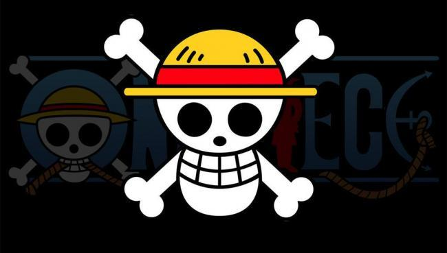

海贼王
航海王《ONE PIECE》是日本漫画家尾田荣一郎作画的少年漫画作品，简称OP，在《周刊少年Jump》1997年34号开始连载。改编的电视动画《航海王》于1999年10月20日起在富士电视台首播。
创作背景
尾田荣一郎小时候是看着鸟山明的《龙珠》长大的，那部作品对他影响巨大。当时尾田最大的心愿就是能在单行本中看到更多的集数。于是当他自己成为漫画家以后，坚持要让《航海王》的单行本分量更足。他小时候还有一个“打击”，他曾天真地以为《龙珠》是鸟山明一个人画的，但实际上漫画家都有助手协助。尾田第一次得知这个真相的时候，感觉“受骗了”。这个“打击”让他刻骨铭心，所以他成为漫画家之后竭尽所能不让孩子们失望。《航海王》画面中所有动态的部分都是尾田亲笔画的，助手只做一些很简单的工作。这是极少见的。
虽然尾田把这个故事画了十多年了，但的确从一开始他就想好了结局，这个结局只有几个主要编辑知道，绝不能透露。不过，虽然结局是已知的，中间的过程却未知，会有些什么故事，尾田老师自己也不知道。
尾田的煽情功力基本是他自己的，编辑在这点上很少能帮到他。编辑的作用是当一个读者，如果编辑没有被感动，那么尾田就要重新编他的故事。
故事介绍
拥有财富、名声、权力，这世界上的一切的男人 “海贼王”哥尔·D·罗杰，在被行刑受死之前说了一句话，让全世界的人都涌向了大海。“想要我的宝藏吗？如果想要的话，那就到海上去找吧，我全部都放在那里。”，世界开始迎接“大海贼时代”的来临。时值“大海贼时代”，为了寻找传说中海贼王罗杰所留下的大秘宝“ONE PIECE”，无数海贼扬起旗帜，互相争斗。一个叫路飞的少年为了与因救他而断臂的香克斯的约定而出海，在旅途中不断寻找志同道合的伙伴，开始了以成为海贼王为目标的伟大冒险旅程。